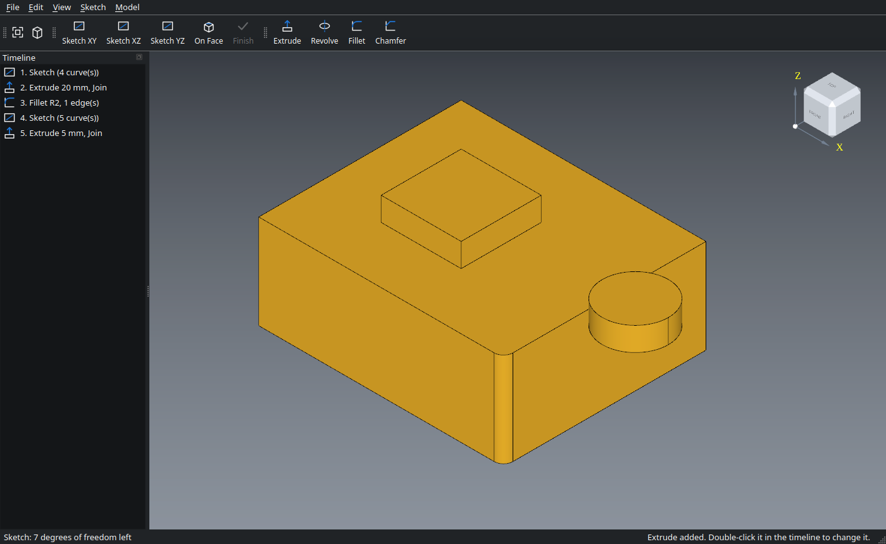

CAD that belongs to you.
OpenCaliper is a free, open-source parametric 3D CAD program. No subscription, no account, no cloud. Your designs are files on your own computer, in open formats, and nobody can take them away.

Your tools should work for you, not for a business model.
Design software used to be something you bought. You paid once, installed it, and it was yours for as long as your computer ran. Over the last decade much of the professional CAD world quietly changed that deal. Programs became services. Licences became monthly subscriptions. Files moved from your disk to someone else's servers. Features that were free became paid tiers, and the rules of the free tiers changed whenever the business needed them to.
For a large company this may be a reasonable trade. For a student, a maker with a 3D printer, a small workshop, a hobby engineer or anyone who simply wants to design a bracket on a Sunday afternoon, it often is not. You end up renting the ability to open your own work. Stop paying, lose your account, or watch the vendor change its terms, and the drawings you made yourself can become hard to reach.
A design you made should be yours in the most practical sense: a file you can open, copy, back up and keep using in ten years, without asking anyone's permission.
OpenCaliper is a small answer to that. It is not trying to compete with large commercial packages feature for feature. It is trying to get the basics of parametric design right (sketches, constraints, features, an editable history) in a program that is entirely in your hands.
What "belongs to you" means here
No subscription and no licence server. There is nothing to renew, no trial that runs out and no "your seat has expired" message. You download it once and it keeps working.
No account and no cloud. OpenCaliper does not ask you to sign in and does not connect to the internet. It contains no network code at all. Your projects are saved where you choose, as ordinary files.
Open, readable files. Projects are saved as .ocal
files, which are plain JSON: you can open one in a text editor and see your
sketches, dimensions and steps. Finished parts are exported as STEP (an ISO
standard every serious CAD program reads), IGES, STL or OBJ. Your work never
depends on OpenCaliper continuing to exist.
Open source, for good. The full source code is public under the MIT licence. Anyone can read it, check what it does, fix it, build it themselves or continue it if the original author stops. A program whose source is public cannot be locked away later.
Free for any use, including commercial. You may use OpenCaliper to design parts you sell. There are no "non-commercial only" strings and no revenue limits. The parts you design are yours.
Standing on open shoulders
Building a geometry kernel from scratch takes decades, so OpenCaliper does not try to. It is built on Open CASCADE Technology, an open-source 3D modelling kernel with a long history in engineering software, and on Qt for its interface. Both are open source under the LGPL. OpenCaliper's own contribution is the part in between: the sketcher and its constraint solver, the feature timeline, the file formats and the interface that ties them together.
Honest about where it stands
OpenCaliper is young. Version 0.1 covers single parts: sketching, extrude, revolve, fillet, chamfer, booleans and an editable history. It does not yet do assemblies, drawings, sheet metal or simulation, and it does not pretend to. If you need those today, use whatever tool does them for you. If you want simple, precise parts in a program that respects you, OpenCaliper is for you, and it will grow with the people who use it.
What you give up with rented CAD, and what you keep here.
| Typical subscription CAD | OpenCaliper | |
|---|---|---|
| Price | Monthly or yearly fee; free tiers with conditions that can change | Free, forever |
| Account | Usually required, often online sign-in | None |
| Internet | Often needed to start, save or sync | Never needed |
| Where files live | Often on the vendor's cloud | On your disk, where you choose |
| Project format | Proprietary | Plain JSON, documented in the source |
| Export | Sometimes limited in free tiers | STEP, IGES, STL, OBJ, BREP, always |
| Commercial use | Often needs a paid licence | Allowed (MIT) |
| Source code | Closed | Open, on GitHub |
| Feature depth | Very large | Focused on the essentials, growing |
Real parametric modelling, without the weight.
Parametric means every part is built from steps that remember their values. Make a plate 10 mm thick, round its corners, drill a hole; later change the thickness to 15 mm and everything after it rebuilds itself.
2D sketches
Lines, rectangles, circles, arcs, polygons and slots on any plane or flat face. Trim, offset, mirror and round corners, with dashed construction geometry and undo.
Constraints and dimensions
Coincident, horizontal, vertical, parallel, perpendicular, tangent, equal, symmetric and fix, plus exact lengths, radii and distances. Drag a point and the sketch follows the rules.
Parameters and formulas
Name a size once, width = 50, and type width / 2 + 5 wherever a size is asked for. Change the parameter and the whole part follows.
Solids from sketches
Extrude and revolve as a new body, or join, cut and intersect with what you already have. Loops inside loops become holes automatically.
Dimensions you can click
Hole diameters, sketch sizes and extrude depths are shown on the part. Double-click one, type a new value, and the model rebuilds.
Fillets and chamfers
Click edges and round them or bevel them to the size you type in. They keep finding their edges when earlier steps change the part.
Screw holes
Mark hole positions with circles and pick a size from M2 to M12: simple, counterbored for socket heads or countersunk for flat heads.
Shell, patterns and mirror
Hollow a part into a box with one click, repeat holes or bosses in a row or around a circle, and mirror a half into a whole part.
Measure and weigh
Measure distances, angles and areas, and see volume, size and weight in PLA, PETG, aluminium, steel and more.
Editable timeline
Every step is listed. Double-click one to change it, edit an old sketch, delete a step, and the rest of the part rebuilds. Undo, redo and autosave with crash recovery included.
Open file formats
Save projects as readable .ocal files. Export STEP, IGES, STL, OBJ, 3MF and BREP; import STEP, IGES and BREP.
Calm interface
A clean 3D view with a clickable view cube, standard views on number keys, and drawing tools that only appear while you sketch.
Works with Claude
On Linux, Claude can build parts for you over MCP: describe the part and watch the steps appear in the timeline. Every change can be edited or undone with Ctrl+Z. Off until you turn it on in Tools → Claude (MCP).
Private by design
No telemetry, no sign-in, no network access. What you design on your computer stays on your computer. The optional Claude connection is local to your computer and off by default.
From sketch to solid
- Click Sketch XY to start drawing on the ground plane.
- Press L and click corner after corner; click the first point again to close the shape. Press C for a circle inside it.
- Press Esc twice to select, click a line and press D to give it an exact length.
- Click Finish, then Extrude and type a thickness. The circle becomes a hole.
- Click an edge of the part and choose Fillet to round it.
- Double-click the hole's Ø label on the part, type a new diameter, and watch the hole change. The thickness label works the same way.
- File → Export as 3MF or STL for your 3D printer, or STEP for any other CAD program.
Free, for Linux and Windows
Linux: AppImage
One file, nothing to install. Works on Ubuntu 22.04+, Linux Mint 21+, Debian 12+, Fedora 36+, Arch, openSUSE Tumbleweed and most other current distributions.
OpenCaliper-x86_64.AppImageLinux: Flatpak
Works on practically every distribution, including older ones, RHEL 9, openSUSE Leap and immutable systems like Silverblue. Install with flatpak install --user OpenCaliper.flatpak.
Windows 10 / 11
64-bit. One file, nothing to install: download the .exe and double-click it. The first start takes a few seconds while it unpacks. Prefer a folder? Take the zip, "Extract All" and run OpenCaliper.exe inside. The program is not code-signed yet, so SmartScreen may ask you to confirm with "More info" → "Run anyway".
To run the AppImage: chmod +x OpenCaliper-x86_64.AppImage and then
./OpenCaliper-x86_64.AppImage. Ubuntu 24.04 and newer also need
sudo apt install libfuse2t64. All systems need a graphics driver with
OpenGL 3.3 or newer. Older versions and release notes are on the
releases page.
Open source, with nothing hidden
OpenCaliper's own code is released under the MIT licence. You may use it for any purpose, including commercial work, and copy, change and share it, as long as the copyright notice stays with it. It comes without warranty.
The libraries it is built on keep their own open-source licences: Open CASCADE Technology (LGPL 2.1 with the Open CASCADE exception), Qt (LGPL 3) and FreeType (FreeType Licence), along with smaller libraries under MIT, BSD and similar terms. The full list and texts are in THIRD-PARTY-NOTICES.md and inside the program under Help → Licenses.
Want to help? Report a problem or suggest an idea in the issue tracker, or read the code and send a pull request. Every bit of help keeps good design tools free for everyone.